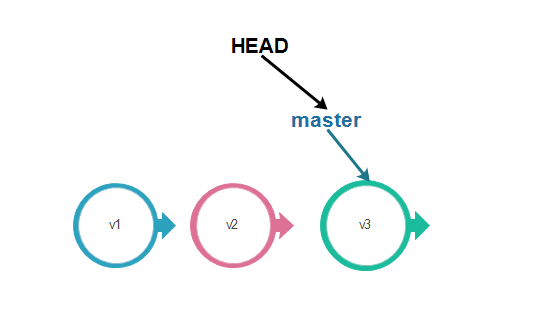
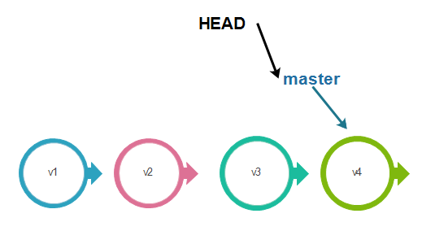
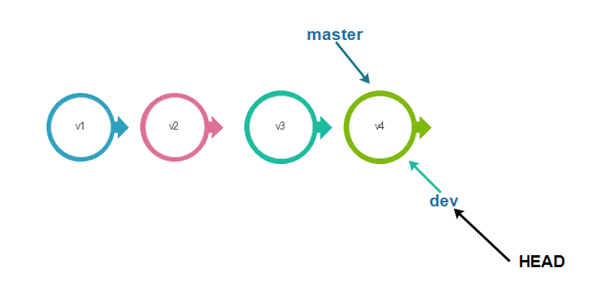
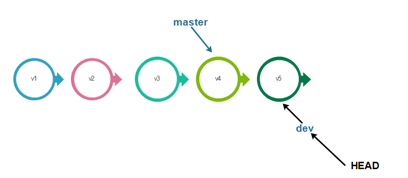
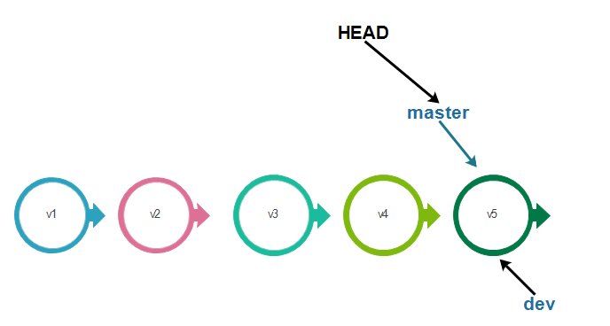
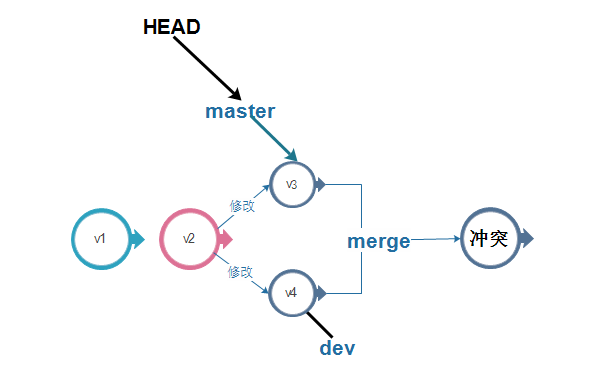

主要就是git仓库概念与分支概念，git比较多，链接几篇博文。
git仓库概念与基础命令
git分支管理
git回滚
git分支重命名
git仓库

Workspace：工作区
Index / Stage：暂存区
Repository：仓库区（或本地仓库）
Remote：远程仓库
git分支
master分支
在我们没有创建分支时，git会默认给我们创建一个master分支。刚才讲的HEAD是指向分支的，即当前分支，在这就是指向master分支，而master才是指向提交的。

每次提交，master分支都会向前进一步。

dev分支
当我们创建一个分支dev时，Git会创建一个新的指针dev，dev指针会指向master相同的提交版本节点，而HEAD也会指向 dev分支上，即当前版本是dev上的当前最新版本。
1 | git branch dev //创建分支 |

当我们创建分支并切换到该分支后，Git会将HEAD指向所创建的分支dev上，从而我们以后再提交时，master分支的指针将不会改变，而dev分支的指针会向前移动。

合并分支
有创建就会有合并， 在dev上的工作做完后，就可以把dev分支和master分支合并，合并也非常简单，只需要将master指向dev的当前提交即可。合并之后，HEAD会指向master分支。
1
git merge dev //快速模式合并，直接将当前所处分支指针指向dev的当前提交版本。

合并冲突
在现实情况下，多多少少还是会出现在merge的时候出现冲突的，即同一个文件在两个分支中都被修改了，在合并时使用快速合并模式*就会产生冲突。

重命名分支
- 重命名本地
1 | git branch -m oldName newName |
- 重命名远程分支
先重命名本地分支，然后删除远程分支，再把本地分支推动送到远程（创建远程分支），最后与远程分支与本地分支关联
1 | git branch -m oldName newName |
工作区隐藏与分支
在实际的开发过程中，我们需要去修复一个bug时，我们一般都会去创创建一个issue分支去修复这个bug，所以我们会把当前的工作现场存储起来。
将当前工作现场隐藏1
git stash
bug处理完成，删除issue分支
查看stash内的工作区1
git stash list
工作区恢复1
2
3
4git stash apply stash@{0} //恢复现场
git stash drop stash@{0} //删除stash内的stash@{0}工作区
或
git stash pop stash@{0} //恢复现场并删除stash@{0}工作区
git回滚相关
git reset
reset 为 重置到这次提交，将内容重置到指定的版本。git reset 命令后面是需要加2种参数的：–-hard 和 –-soft。这条命令默认情况下是 -–soft。
执行上述命令时，这该条commit号之 后（时间作为参考点）的所有commit的修改都会退回到git缓冲区中。使用git status 命令可以在缓冲区中看到这些修改。而如果加上-–hard参数，则缓冲区中不会存储这些修改，git会直接丢弃这部分内容。
1 | git reset --soft commit_id |
反回滚
你回滚之后，又后悔了，想恢复到新的版本怎么办？
用git reflog打印你记录你的每一次操作记录,然后再次执行
1 | git reflog |
git代码量统计
1 | git log --author="username" --pretty=tformat: --numstat | awk '{ add += $1; subs += $2; loc += $1 - $2 } END { printf "added lines: %s, removed lines: %s, total lines: %s\n", add, subs, loc }' - |